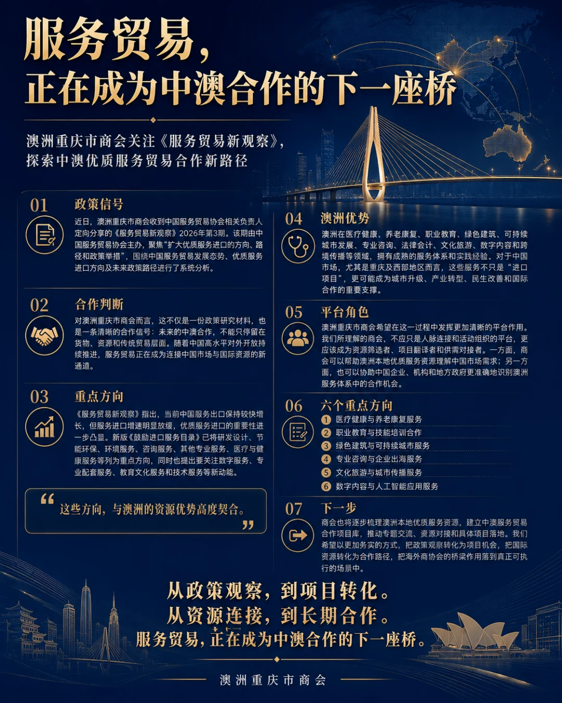

服务贸易，正在成为中澳合作的下一座桥
澳洲重庆市商会关注《服务贸易新观察》
探索中澳优质服务贸易合作新路径

近日，澳洲重庆市商会收到中国服务贸易协会相关负责人定向分享的《服务贸易新观察》2026年第3期。该期由中国服务贸易协会主办，聚焦“扩大优质服务进口的方向、路径和政策举措”，围绕中国服务贸易发展态势、优质服务进口方向及未来政策路径进行了系统分析。
对澳洲重庆市商会而言，这不仅是一份政策研究材料，也是一条清晰的合作信号：未来的中澳合作，不能只停留在货物、资源和传统贸易层面。随着中国高水平对外开放持续推进，服务贸易正在成为连接中国市场与国际资源的新通道。
《服务贸易新观察》指出，当前中国服务出口保持较快增长，但服务进口增速明显放缓，优质服务进口的重要性进一步凸显。新版《鼓励进口服务目录》已将研发设计、节能环保、环境服务、咨询服务、其他专业服务、医疗与健康服务等列为重点方向，同时也提出要关注数字服务、专业配套服务、教育文化服务和技术服务等新动能。
这些方向，与澳洲的资源优势高度契合。
澳洲在医疗健康、养老康复、职业教育、绿色建筑、可持续城市发展、专业咨询、法律会计、文化旅游、数字内容和跨境传播等领域，拥有成熟的服务体系和实践经验。对于中国市场，尤其是重庆及西部地区而言，这些服务不只是“进口项目”，更可能成为城市升级、产业转型、民生改善和国际合作的重要支撑。
澳洲重庆市商会希望在这一过程中发挥更加清晰的平台作用。
我们所理解的商会，不应只是人脉连接和活动组织的平台，更应该成为资源筛选者、项目翻译者和供需对接者。一方面，商会可以帮助澳洲本地优质服务资源理解中国市场需求；另一方面，也可以协助中国企业、机构和地方政府更准确地识别澳洲服务体系中的合作机会。
下一步，澳洲重庆市商会将围绕中澳优质服务贸易合作，重点关注六个方向：
医疗健康与养老康复服务、职业教育与技能培训合作、绿色建筑与可持续城市服务、专业咨询与企业出海服务、文化旅游与城市传播服务、数字内容与人工智能应用服务。
商会也将逐步梳理澳洲本地优质服务资源，建立中澳服务贸易合作项目库，推动专题交流、资源对接和具体项目落地。我们希望以更加务实的方式，把政策观察转化为项目机会，把国际资源转化为合作路径，把海外商协会的桥梁作用落到真正可执行的场景中。
服务贸易，不只是经济概念。
它连接的是医疗、教育、城市、文化、技术、生活方式，也连接着一个国家对外开放的深度和一座城市面向世界的能力。
澳洲重庆市商会愿意以澳洲为起点、以重庆为连接点，持续探索中澳服务贸易的新空间。
从政策观察，到项目转化。
从资源连接，到长期合作。
服务贸易，正在成为中澳合作的下一座桥。